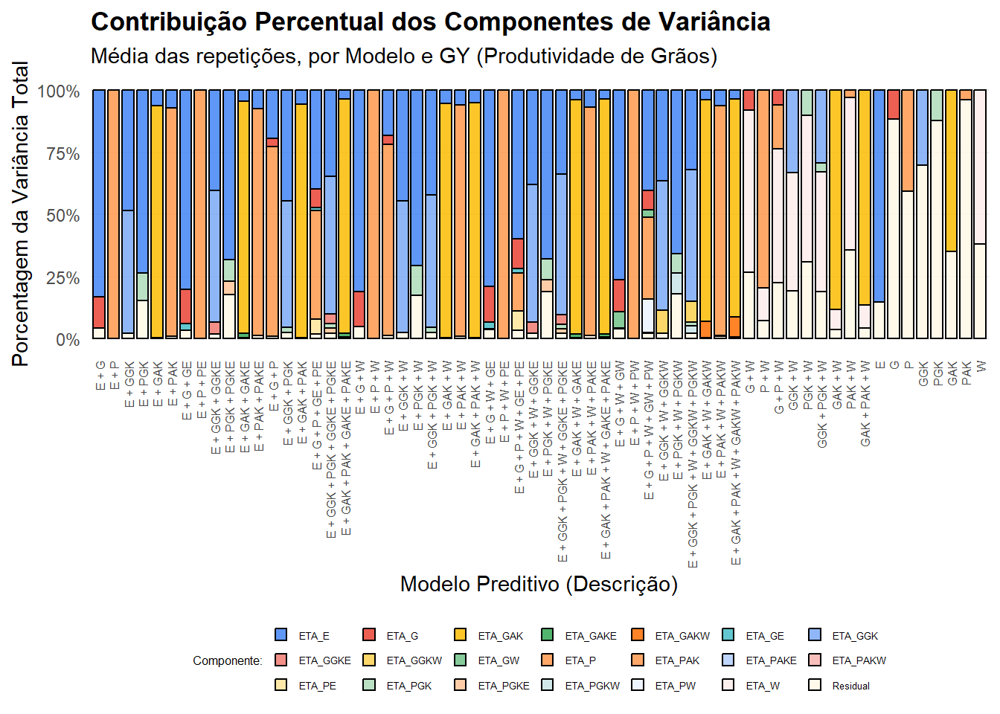

Last updated: 2025-11-03
Checks: 6 1
Knit directory:
Integrating-nir-genomic-kernel/
This reproducible R Markdown analysis was created with workflowr (version 1.7.2). The Checks tab describes the reproducibility checks that were applied when the results were created. The Past versions tab lists the development history.
The R Markdown is untracked by Git. To know which version of the R
Markdown file created these results, you’ll want to first commit it to
the Git repo. If you’re still working on the analysis, you can ignore
this warning. When you’re finished, you can run
wflow_publish to commit the R Markdown file and build the
HTML.
Great job! The global environment was empty. Objects defined in the global environment can affect the analysis in your R Markdown file in unknown ways. For reproduciblity it’s best to always run the code in an empty environment.
The command set.seed(20250829) was run prior to running
the code in the R Markdown file. Setting a seed ensures that any results
that rely on randomness, e.g. subsampling or permutations, are
reproducible.
Great job! Recording the operating system, R version, and package versions is critical for reproducibility.
Nice! There were no cached chunks for this analysis, so you can be confident that you successfully produced the results during this run.
Great job! Using relative paths to the files within your workflowr project makes it easier to run your code on other machines.
Great! You are using Git for version control. Tracking code development and connecting the code version to the results is critical for reproducibility.
The results in this page were generated with repository version 80b3304. See the Past versions tab to see a history of the changes made to the R Markdown and HTML files.
Note that you need to be careful to ensure that all relevant files for
the analysis have been committed to Git prior to generating the results
(you can use wflow_publish or
wflow_git_commit). workflowr only checks the R Markdown
file, but you know if there are other scripts or data files that it
depends on. Below is the status of the Git repository when the results
were generated:
Ignored files:
Ignored: .Rhistory
Ignored: .Rproj.user/
Untracked files:
Untracked: analysis/analysis.Rmd
Untracked: analysis/climate_data.Rmd
Untracked: analysis/code_NIRS_kernels.R
Untracked: analysis/code_for_GBLUP.R
Untracked: analysis/code_for_GBLUP_pt.R
Untracked: analysis/components_variance.Rmd
Untracked: analysis/process_climate_data.Rmd
Untracked: data/Article_documents/
Untracked: data/GAPIT.Genotype.Numerical.txt
Untracked: data/Maize-NIRS-GBS-main/
Untracked: data/NIR.csv
Untracked: data/Pheno.rds
Untracked: output/
Note that any generated files, e.g. HTML, png, CSS, etc., are not included in this status report because it is ok for generated content to have uncommitted changes.
There are no past versions. Publish this analysis with
wflow_publish() to start tracking its development.
Introdução
Este documento é um tutorial que detalha a análise dos componentes de variância de um conjunto de modelos preditivos. Este script faz parte de uma análise maior que integra dados de Espectroscopia de Refletância no Infravermelho Próximo (NIR), dados genômicos e climáticos usando métodos de kernel para melhorar a predição.
O objetivo principal deste tutorial específico não é avaliar a capacidade preditiva (como faríamos com validação cruzada), mas sim entender a estrutura dos dados. Vamos ajustar os modelos ao conjunto de dados completo para particionar a variação fenotípica total. Em outras palavras, queremos responder à pergunta:
“Quanta da variação observada em uma característica (como produtividade de grãos) é devida à genética (G), ao ambiente (E), à interação GxE, ou ao resíduo (erro)?”
Compreender essa partição é fundamental para direcionar estratégias de melhoramento genético.
1) Carregar Bibliotecas e Dados
Antes de começarmos, precisamos carregar nossa “caixa de ferramentas” de pacotes R. Cada um desempenha um papel específico:
tidyverse: Essencial para manipulação, limpeza e visualização de dados (usandodplyr,tidyr,ggplot2).data.table: Extremamente eficiente para ler e manipular arquivos de dados muito grandes.BGLR: O pacote central para esta análise. Ele nos permite ajustar modelos mistos lineares generalizados Bayesianos, que são ideais para predição genômica e partição de variância.parallel&doParallel: Nossas ferramentas de aceleração. Como ajustaremos dezenas (ou centenas) de modelos, usaremos esses pacotes para executar as tarefas em paralelo, usando múltiplos núcleos do processador.MASS&scales: Pacotes auxiliares para funções estatísticas e para formatar eixos em nossos gráficos.
# Pacotes principais
library(tidyverse) # Manipulação de dados
library(data.table) # Leitura eficiente de grandes arquivos
library(BGLR) # Modelagem Bayesiana para predição genômica
# Paralelismo
library(parallel)
library(doParallel)
# Funções estatísticas adicionais
library(MASS) # Funções estatísticas
library(scales) # Escalonamento de dados2) Componentes de Variância
Com nossas ferramentas carregadas, mergulhamos na análise principal.
Como mencionado, nosso foco aqui é a partição da
variância. Ajustaremos cada modelo (definido em uma etapa
anterior, não mostrada aqui, e armazenado no objeto
Models_full_set) a todos os dados para obter as
estimativas mais estáveis de cada componente de variância.
2.1) Parâmetros para execução dos modelos
Primeiro, definimos os parâmetros que controlarão o processo de
amostragem MCMC (Monte Carlo via Cadeias de Markov) dentro do
BGLR. Em uma análise Bayesiana, não obtemos um único valor
como resposta (ex: \(varG = 10\)), mas
sim uma distribuição de valores prováveis.
Pense no MCMC como um explorador em uma paisagem de possíveis respostas.
nIter: O número total de “passos” que o explorador dará (5000).burnIn: O número de passos iniciais que descartamos (1000). Isso dá ao explorador tempo para “encontrar” a região mais interessante da paisagem (a distribuição estacionária).thin: O intervalo de amostragem (10). Para evitar anotar informações redundantes, só registramos um passo a cada 10.num_rep: O número de vezes que repetiremos todo o processo (20) para garantir que nossos resultados são estáveis.
Ao final, teremos \((5000 - 1000) / 10 = 400\) amostras para cada parâmetro, de cada repetição.
# Parâmetros de execução do BGLR
nIter <- 5000 # número total de iterações da cadeia MCMC
burnIn <- 1000 # número de iterações descartadas como burn-in
thin <- 10 # intervalo de amostragem para reduzir autocorrelação
num_rep <- 20 # número de repetições (usado em 'combos')2.2) Configuração do backend paralelo
Por que isso é importante? Temos muitos modelos para rodar, multiplicados por 20 repetições e por múltiplas características (traits). Fazer isso um de cada vez (serialmente) levaria dias.
Este bloco de código detecta quantos núcleos de CPU seu computador
possui e “reserva” a maioria deles (todos menos um, para o sistema
operacional) para o trabalho.
doParallel::registerDoParallel(cl) informa ao R que ele
pode usar esse cluster de núcleos para executar tarefas
simultaneamente.
# Detecta número de núcleos disponíveis e configura backend paralelo
numCores <- parallel::detectCores()
useCores <- max(1, numCores - 1) # usa todos menos 1 núcleo
cl <- parallel::makeCluster(useCores)
doParallel::registerDoParallel(cl)
cat("Rodando em ", useCores, " núcleos.")Rodando em 21 núcleos.gc() # Limpa memória (coleta de lixo) antes da execução paralela intensiva used (Mb) gc trigger (Mb) max used (Mb)
Ncells 1449432 77.5 2617072 139.8 2617072 139.8
Vcells 2482332 19.0 8388608 64.0 4001535 30.62.3) Função run_bglr Otimizada para Métricas
Esta é uma função auxiliar (ou wrapper) personalizada que
criamos para rodar o BGLR de forma eficiente.
O problema: O objeto fit padrão do
BGLR é muito pesado, contendo milhares de amostras
para cada efeito. Salvá-lo e lê-lo do disco em um loop paralelo é
extremamente lento e ineficiente.
A solução: Nossa função
run_bglr_metrics faz o seguinte:
- Roda o
BGLRnormalmente. - Imediatamente extrai apenas a informação essencial:
as 400 amostras (pós-
burnInethin) para cada componente de variância (ex:fit$varE,fit$ETA[[1]]$varU, etc.). - Armazena essas amostras em uma lista leve chamada
saida_essencial. - Descarta o objeto
fitpesado da memória (usandorm(fit)egc()). - Retorna a lista
saida_essencialleve.
Isso evita toda a sobrecarga de leitura/escrita em disco, tornando o processo paralelo muito mais rápido.
# --- FUNÇÃO OTIMIZADA PARA MÉTRICAS ---
# Retorna os componentes de variância e métricas diretamente.
run_bglr_metrics <- function(y_vector, ETA, nIter, burnIn, thin, save_prefix) {
y_t <- as.numeric(y_vector)
dir.create(dirname(save_prefix), recursive = TRUE, showWarnings = FALSE)
# mede tempo
start_time <- Sys.time()
fit <- BGLR(y = y_t,
ETA = ETA,
nIter = nIter,
burnIn = burnIn,
thin = thin,
saveAt = save_prefix)
end_time <- Sys.time()
elapsed <- as.numeric(difftime(end_time, start_time, units = "secs"))
# 1. Extrair componentes de variância (varU) de forma dinâmica
variancias_U <- list()
if (!is.null(fit$ETA)) {
nomes_efeitos <- names(fit$ETA)
if (is.null(nomes_efeitos)) {
nomes_efeitos <- paste0("Efeito_", seq_along(fit$ETA))
}
for (i in seq_along(fit$ETA)) {
efeito_nome <- nomes_efeitos[i]
# Armazena as *amostras* da variância (pós-burnIn)
# Procura por parâmetros de variância comuns (varU, varG, varB, etc.)
var_param_name <- names(fit$ETA[[i]])[grepl("^var", names(fit$ETA[[i]]))]
if (length(var_param_name) > 0) {
# Pega o primeiro encontrado (geralmente 'varU' ou 'varG')
variancias_U[[efeito_nome]] <- fit$ETA[[i]][[var_param_name[1]]]
}
}
}
# 2. Criar o objeto de saída leve
saida_essencial <- list(
# yHat não é necessário para componentes de variância,
# mas pode ser útil manter.
# yHat_mean = fit$yHat,
varE_samples = fit$varE, # Amostras da variância residual
# Amostras da variância de efeitos fixos (se houver)
varB_samples = ifelse(is.null(fit$varB), NA, fit$varB),
variances_U_samples = variancias_U, # Lista de amostras das variâncias
DIC = ifelse(is.null(fit$fit$DIC), NA, fit$fit$DIC),
runtime_sec = elapsed
)
# 3. Salvar este objeto de métricas leve (opcional, mas bom para backup)
saveRDS(saida_essencial, paste0(save_prefix, "_metricas.rds"))
# 4. Limpar o objeto 'fit' pesado da memória
rm(fit)
gc() # Força a "coleta de lixo"
# --- MUDANÇA DE LÓGICA ---
# Retorna o objeto de métricas completo, não apenas yHat/runtime
return(saida_essencial)
}
# --- FIM DA FUNÇÃO OTIMIZADA ---2.4) Execução dos modelos em paralelo (Otimizado)
Este é o coração do script. Aqui, usamos foreach para
iterar sobre todas as combinações de MODEL,
REP e TRAIT (definidas no objeto
combos). Graças à configuração da Seção 2.2, esses
trabalhos são distribuídos pelos núcleos da CPU.
Dentro de cada iteração paralela (para cada núcleo):
- Configura: Identifica qual modelo, repetição e trait deve rodar.
- Executa: Chama nossa função
run_bglr_metrics(da Seção 2.3). - Recebe: Obtém a lista leve
metrics_resultcontendo as amostras de variância. - Calcula: Imediatamente calcula a média
a posteriori de cada componente (ex:
mean(metrics_result$varE_samples)). Esta média é a nossa melhor estimativa pontual para aquele componente de variância. - Formata: Armazena essas estimativas médias em um
data.frameorganizado, identificando qual componente é qual (Residual, Fixo, Aleatório, etc.). - Retorna: O
data.framede resultados para esta iteração.
Após o término do loop: O foreach
coleta todos os data.frames de resultados (um de cada
iteração) e do.call(rbind, ...) os empilha em uma única
tabela mestre: all_variance_components.
Finalmente, salvamos esta tabela consolidada em um arquivo CSV. Este é o nosso resultado bruto, pronto para pós-processamento e visualização.
Nota: Este bloco está com
eval=FALSE para que o tutorial possa ser compilado
rapidamente. Para executar a análise, mude a opção do chunk para
{r parallel-model-optimized} e execute-o.
# Paraleliza e **coleta os resultados** em 'results_list'
results_list <- foreach(i = seq_len(nrow(combos)),
.packages = c("BGLR", "dplyr", "plyr", "readr")) %dopar% {
MODEL <- combos$MODEL[i]
rep_num <- combos$REP[i]
TRAIT <- as.character(combos$TRAIT[i])
# Filtra o Pheno para os pedigrees corretos
pheno <- data.frame(Pheno[Pheno$Pedigree %in% Pedigree,]) # copia local
# Diretórios (movido para a subpasta correta)
rep_dir <- file.path("output/componentes_variancia", paste0("rep_", rep_num))
eta_dir <- file.path(rep_dir, paste0("Eta", MODEL))
dir.create(eta_dir, recursive = TRUE, showWarnings = FALSE)
y_data <- pheno[[TRAIT]]
# Prefixo de salvamento (para o _metricas.rds)
save_prefix_full <- file.path(eta_dir,
paste0("full_Eta", MODEL, "_", TRAIT, "_rep", rep_num, "_"))
# --- INÍCIO DA OTIMIZAÇÃO ---
# 1. Executa a função que retorna as métricas diretamente
metrics_result <- run_bglr_metrics(
y_vector = y_data,
ETA = Models_full_set[[MODEL]],
nIter = nIter,
burnIn = burnIn,
thin = thin,
save_prefix = save_prefix_full
)
# 2. Extrair os componentes de variância do objeto retornado
# 2.1. Variância Residual (calcula a média das amostras)
varE_mean <- mean(metrics_result$varE_samples)
df_components <- data.frame(
Component = "Residual",
Param = "varE",
MeanVar = varE_mean
)
# 2.2. Variâncias dos Componentes (U)
if (length(metrics_result$variances_U_samples) > 0) {
var_components_U_list <- lapply(names(metrics_result$variances_U_samples), function(eta_name) {
var_samples <- metrics_result$variances_U_samples[[eta_name]]
data.frame(
Component = eta_name,
# Nota: O param 'varU' foi generalizado na func 14.3
Param = "varComponent",
MeanVar = mean(var_samples)
)
})
df_components <- rbind(df_components, do.call(rbind, var_components_U_list))
}
# 2.3. Variância dos Efeitos Fixos (varB)
if (!is.na(metrics_result$varB_samples[1])) {
df_components <- rbind(df_components,
data.frame(Component = "Fixed",
Param = "varB",
MeanVar = mean(metrics_result$varB_samples)))
}
# 3. Adicionar identificadores da execução
df_components$MODEL <- MODEL
df_components$REP <- rep_num
df_components$TRAIT <- TRAIT
# 4. Retornar o dataframe de variâncias
return(df_components)
# --- FIM DA OTIMIZAÇÃO ---
} # end foreach
# Combinar os dataframes de todas as execuções em paralelo
all_variance_components <- do.call(rbind, results_list)
# (Opcional) Visualizar os resultados
print("Componentes de Variância Estimados:")
print(all_variance_components)
# Salvar os resultados consolidados em CSV
# (Usando readr::write_csv para consistência, mas write.csv também funciona)
readr::write_csv(all_variance_components, "output/componentes_variancia/Variance.Components.DAT.Means.csv")2.5) Pós-Processamento: Extraindo Metadados
Nosso arquivo CSV (...DAT.Means.csv) salvo na etapa
anterior é funcional, mas “sujo”. As informações importantes (como
Modelo, Trait e Componente) estão misturadas em uma única coluna
file_name.
Este bloco de código é uma etapa crucial de limpeza de dados.
Usando tidyr::extract e expressões regulares (Regex),
nós “quebramos” o nome do arquivo em colunas limpas e utilizáveis. Por
exemplo, um nome de arquivo como:
"output/rep_1/Eta1/CS11_WS_GY_Eta1_fold1_G_varU.dat" será
transformado em colunas:
Rep: 1Model: Eta1Env: CS11_WSTrait: GYComponent: GParameter: Aleatorio
O resultado é um dataframe limpo
(Variance.Components) que é salvo em um novo arquivo
(...Parsed.csv) e usado para as visualizações.
# 1. Carregar seus dados (assumindo que já estão em Variance.Components.Means)
Variance.Components.Means <- read.csv("output/componentes_variancia/Variance.Components.DAT.Means.csv")
# 2. Processo de Conversão
Variance.Components <- Variance.Components.Means %>%
# Etapa 1: Extrair as partes do caminho (Rep, Model) e o "resto" do arquivo
# Usamos regex para capturar os grupos
extract(
file_name,
into = c("Rep", "Model", "rest"),
# Regex: output/rep_(\d+) / (Eta\d+) / (.*) \.dat
regex = "^output/rep_(\\d+)/(Eta\\d+)/(.*)\\.dat$",
convert = TRUE, # Converte Rep (1) para número
remove = FALSE # Mantém a coluna file_name original
) %>%
# Etapa 2: Extrair as partes do "resto" do nome do arquivo
# Isso também usa regex para capturar os componentes do nome
extract(
rest,
into = c("Env", "Trait", "Model_File", "Fold", "component_chunk"),
# Regex: (Ambiente) _ (Trait) _ (Modelo) _ (Fold) _ (Resto)
# [^_]+_[^_]+ captura "CS11_WS" como uma única entidade
regex = "^([^_]+_[^_]+)_([^_]+)_([^_]+)_([^_]+)_(.*)$"
) %>%
# Etapa 3: Mapear o "component_chunk" final usando lógica condicional
# Esta é a parte mais importante, pois mapeia os finais de arquivo
# para as colunas 'Component' e 'Parameter'
mutate(
Component = case_when(
# Se termina com _varB, Component = o que vem antes, Parameter = Fixo
str_ends(component_chunk, "_varB") ~ str_remove(component_chunk, "_varB$"),
# Se termina com _varU, Component = o que vem antes, Parameter = Aleatorio
str_ends(component_chunk, "_varU") ~ str_remove(component_chunk, "_varU$"),
# Se é exatamente "varE", Component = Residual, Parameter = Residuo
component_chunk == "varE" ~ "Residual",
# Outros casos (como 'mu') resultarão em NA
TRUE ~ NA_character_
),
Parameter = case_when(
str_ends(component_chunk, "_varB") ~ "Fixo",
str_ends(component_chunk, "_varU") ~ "Aleatorio",
component_chunk == "varE" ~ "Residuo",
TRUE ~ NA_character_
)
) %>%
# Etapa 4: Filtrar as linhas que não queremos
# O seu dataframe de saída (Variance.Components) não inclui 'mu',
# então filtramos as linhas onde o Component não pôde ser identificado.
filter(!is.na(Component)) %>%
filter(!(str_starts(Env, "full"))) %>%
# Etapa 5: Selecionar e reordenar as colunas
dplyr::select(
Rep,
Model,
Env,
Trait,
Model_File,
Fold,
Component,
Parameter,
mean_value,
file_name
)
# 3. Ver o resultado
head(Variance.Components)# 4. Salvar o resultado processado
write_csv(Variance.Components, "output/componentes_variancia/Variance.Components.DAT.Means.Parsed.csv")2.6) Criando uma Tabela de Referência de Modelos
Nossos modelos são nomeados Eta1, Eta2,
etc., o que não é muito descritivo. Para tornar nossos gráficos e
tabelas fáceis de entender, criamos esta “tabela de consulta”
(model_info).
Ela simplesmente mapeia um ModelID (ex: 1) e um
Model (ex: “M1”) para uma Description legível
(ex: “E + G”). Isso nos permitirá rotular o eixo X dos nossos gráficos
com “E + G” em vez de “M1”, o que é muito mais informativo.
# --- Cria a tabela de classificação dos modelos (Completa) ---
model_info <- tibble(
ModelID = 1:62,
Model = paste0("M", ModelID),
Type = case_when(
# Grupo 1: Modelos Base (Efeito Categórico E)
ModelID %in% c(1:6, 13:15) ~ "Basico", # E + G/P (efeitos principais)
ModelID %in% c(7:12, 16:18) ~ "Interacao_E", # E + G/P + GxE/PxE
# Grupo 2: Modelos Climáticos (E + W)
ModelID %in% 19:27 ~ "Clima_Base_E", # E + W + G/P (efeitos principais)
ModelID %in% 28:36 ~ "Clima_IntE", # E + W + G/P + GxE/PxE
ModelID %in% 37:45 ~ "Clima_IntW", # E + W + G/P + GxW/PxW
# Grupo 3: Modelos Climáticos (W substitui E)
ModelID %in% 46:54 ~ "Clima_Base_noE", # W + G/P (sem E fixo),
# Grrupo 4: Modelos individuais
ModelID %in% c(55:62) ~ "Individual",
TRUE ~ "Outros"
),
Description = case_when(
# Bloco 1: (Item 10) Modelos básicos (E + G/P)
ModelID == 1 ~ "E + G",
ModelID == 2 ~ "E + P",
ModelID == 3 ~ "E + GGK",
ModelID == 4 ~ "E + PGK", # (Baseado em Eta4)
ModelID == 5 ~ "E + GAK", # (Baseado em Eta5)
ModelID == 6 ~ "E + PAK",
# Bloco 2: (Item 10) Modelos com interações categóricas (E + G/P + GxE/PxE)
ModelID == 7 ~ "E + G + GE",
ModelID == 8 ~ "E + P + PE",
ModelID == 9 ~ "E + GGK + GGKE",
ModelID == 10 ~ "E + PGK + PGKE", # (Baseado em Eta10)
ModelID == 11 ~ "E + GAK + GAKE", # (Baseado em Eta11)
ModelID == 12 ~ "E + PAK + PAKE",
# Bloco 3: (Item 10) Modelos combinados (E + G + P)
ModelID == 13 ~ "E + G + P",
ModelID == 14 ~ "E + GGK + PGK",
ModelID == 15 ~ "E + GAK + PAK",
# Bloco 4: (Item 10) Modelos combinados com interação categórica
ModelID == 16 ~ "E + G + P + GE + PE",
ModelID == 17 ~ "E + GGK + PGK + GGKE + PGKE",
ModelID == 18 ~ "E + GAK + PAK + GAKE + PAKE",
# Bloco 5: (Item 10.1) Modelos E + W + G/P (Clima_Base_E)
ModelID == 19 ~ "E + G + W",
ModelID == 20 ~ "E + P + W",
ModelID == 21 ~ "E + G + P + W",
ModelID == 22 ~ "E + GGK + W",
ModelID == 23 ~ "E + PGK + W",
ModelID == 24 ~ "E + GGK + PGK + W",
ModelID == 25 ~ "E + GAK + W",
ModelID == 26 ~ "E + PAK + W",
ModelID == 27 ~ "E + GAK + PAK + W",
# Bloco 6: (Item 10.1) Modelos E + W + G/P + GxE/PxE (Clima_IntE)
ModelID == 28 ~ "E + G + W + GE",
ModelID == 29 ~ "E + P + W + PE",
ModelID == 30 ~ "E + G + P + W + GE + PE",
ModelID == 31 ~ "E + GGK + W + GGKE",
ModelID == 32 ~ "E + PGK + W + PGKE",
ModelID == 33 ~ "E + GGK + PGK + W + GGKE + PGKE",
ModelID == 34 ~ "E + GAK + W + GAKE",
ModelID == 35 ~ "E + PAK + W + PAKE",
ModelID == 36 ~ "E + GAK + PAK + W + GAKE + PAKE",
# Bloco 7: (Item 10.1) Modelos E + W + G/P + GxW/PxW (Clima_IntW)
ModelID == 37 ~ "E + G + W + GW",
ModelID == 38 ~ "E + P + W + PW",
ModelID == 39 ~ "E + G + P + W + GW + PW",
ModelID == 40 ~ "E + GGK + W + GGKW",
ModelID == 41 ~ "E + PGK + W + PGKW",
ModelID == 42 ~ "E + GGK + PGK + W + GGKW + PGKW",
ModelID == 43 ~ "E + GAK + W + GAKW",
ModelID == 44 ~ "E + PAK + W + PAKW",
ModelID == 45 ~ "E + GAK + PAK + W + GAKW + PAKW",
# Bloco 8: (Item 10.1) Modelos W + G/P (Sem E) (Clima_Base_noE)
ModelID == 46 ~ "G + W",
ModelID == 47 ~ "P + W",
ModelID == 48 ~ "G + P + W",
ModelID == 49 ~ "GGK + W",
ModelID == 50 ~ "PGK + W",
ModelID == 51 ~ "GGK + PGK + W",
ModelID == 52 ~ "GAK + W",
ModelID == 53 ~ "PAK + W",
ModelID == 54 ~ "GAK + PAK + W",
# Bloco 9: (Item 11.5) Modelos individuais
ModelID == 55 ~ "E",
ModelID == 56 ~ "G",
ModelID == 57 ~ "P",
ModelID == 58 ~ "GGK",
ModelID == 59 ~ "PGK",
ModelID == 60 ~ "GAK",
ModelID == 61 ~ "PAK",
ModelID == 62 ~ "W",
TRUE ~ as.character(ModelID) # Fallback
)
)2.7) Visualização: Gráfico de Componentes de Variância
Finalmente, chegamos à visualização. Nossos dados brutos de variância (ex: \(Var_G = 15.2\), \(Var_E = 30.4\)) são difíceis de comparar entre modelos. A melhor maneira de fazer isso é usando porcentagens.
Este primeiro bloco de código prepara os dados para o
ggplot. Ele faz o seguinte:
- Carrega os dados limpos
(
...Parsed.csv) da Seção 2.5. - Agrega os resultados das 20 repetições
(
Rep), calculando a média da variância (AvgVar) para cadaModel,TraiteComponent. - Calcula a Variância Total para cada modelo (ex: \(TotalVar = Var_G + Var_{GxE} + Var_{Residual}\)).
- Calcula a Porcentagem (\(Percentage = AvgVar / TotalVar\)). Este é o nosso valor de interesse (ex: 0.25).
- Junta os dados com
model_info(da Seção 2.6) para adicionar os nomes descritivos.
O resultado, plot_data, está perfeitamente formatado
para criar um gráfico de barras empilhadas.
# 1. Carregar os dados limpos (parseados)
Variance.Components <- read_csv("output/componentes_variancia/Variance.Components.DAT.Means.Parsed.csv")
# 2. Processar os dados para plotagem
plot_data <- Variance.Components %>%
# 1. Agregar as repetições (calcula a média da variância)
group_by(Model, Trait, Component) %>%
summarise(AvgVar = mean(mean_value, na.rm = TRUE), .groups = 'drop') %>%
# Remove componentes que não têm variância (ex: 'Fixed' se foi NA ou 0)
filter(AvgVar > 0 & !is.na(AvgVar)) %>%
# 2. Calcular a variância total (soma de todos os componentes)
# para cada combinação de MODEL e TRAIT.
group_by(Model, Trait) %>%
mutate(TotalVar = sum(AvgVar)) %>%
# 3. Calcular a porcentagem
ungroup() %>%
mutate(Percentage = (AvgVar / TotalVar)) %>% # Valor de 0 a 1
# 4. Garante que MODELO e COMPONENTE sejam fatores para o gráfico
mutate(
Model = str_replace_all(Model, "Eta", "M"), # Opcional: melhora rótulos
Component = as.factor(Component)
) %>%
# 5. Junta com a tabela de referência para nomes descritivos
full_join(model_info, by = "Model") %>%
arrange(Trait, ModelID) # Ordena pela ordem numérica do modelo
# (Opcional) Visualizar os dados processados
head(plot_data)2.7.1) Gráfico para Produtividade de Grãos (GY)
Com os dados plot_data prontos, podemos criar o
gráfico.
A função-chave aqui é geom_col(position = "fill").
geom_colcria as barras.position = "fill"diz aoggplotpara automaticamente escalar a altura de cada barra para 100% (ou 1.0).fill = Componentusa a colunaComponentpara “colorir” as seções da barra.
Isso nos dá uma visão clara da contribuição proporcional de cada componente de variância para cada modelo.
# --- Plot principal ---
g_var <- plot_data %>%
filter(Trait == "GY") %>% # Filtra apenas para Grain Yield (GY)
mutate(Description = reorder(Description, ModelID)) %>% # Ordena o eixo X pelo ModelID
ggplot(aes(x = Description, y = Percentage, fill = Component)) +
# Cria as barras empilhadas.
# position="fill" garante que cada barra vá de 0 a 100%
geom_col(position = "fill", color = "black", alpha = 0.85, width = 0.8) +
# --- Rótulos e Títulos ---
labs(
title = "Contribuição Percentual dos Componentes de Variância",
subtitle = "Média das repetições, por Modelo e GY (Produtividade de Grãos)",
x = "Modelo Preditivo (Descrição)",
y = "Porcentagem da Variância Total",
fill = "Componente:"
) +
# --- Escalas e Temas ---
# Formata o eixo Y para mostrar "0%", "50%", "100%"
scale_y_continuous(labels = scales::percent_format()) +
# Paleta de cores (amigável à visualização)
ggthemes::scale_fill_gdocs() +
# Tema limpo
theme_minimal() +
theme(
legend.position = "bottom", # Posição da legenda
axis.text.x = element_text(angle = 90, vjust = 0.5, hjust = 1, size = 6), # Texto do eixo X
plot.title = element_text(face = "bold"),
panel.grid.major.x = element_blank(), # Remove linhas de grade verticais
panel.grid.minor = element_blank(),
# --- AJUSTES DE TAMANHO DA LEGENDA ---
legend.title = element_text(size = 6), # Tamanho do título da legenda
legend.text = element_text(size = 5), # Tamanho do texto dos itens
legend.key.size = unit(0.5, "lines") # Tamanho dos ícones coloridos
) +
guides(fill = guide_legend(nrow = 3, byrow = TRUE))
# Imprime o gráfico
print(g_var)
# (Opcional) Salvar o gráfico
ggsave("output/componentes_variancia/variance_components_percentage_GY.tiff",
plot = g_var,
width = 16, height = 12, dpi = 300)2.7.2) Gráfico para Peso de Grãos (KW)
Este bloco é idêntico ao anterior, mas filtra os dados para o trait KW (Kernel Weight, ou Peso de Grãos). Ele gera e salva um gráfico separado, permitindo uma análise independente da partição da variância para esta característica.
# --- Plot principal ---
g_var <- plot_data %>%
filter(Trait == "KW") %>% # Filtra apenas para Kernel Weight (KW)
ggplot(aes(x = reorder(Description, ModelID), y = Percentage, fill = Component)) +
# Cria as barras empilhadas.
geom_col(position = "fill", color = "black", alpha = 0.85, width = 0.8) +
# --- Rótulos e Títulos ---
labs(
title = "Contribuição Percentual dos Componentes de Variância",
subtitle = "Média das repetições, por Modelo e KW (Peso de Grãos)",
x = "Modelo Preditivo (Descrição)",
y = "Porcentagem da Variância Total",
fill = "Componente:"
) +
# --- Escalas e Temas ---
scale_y_continuous(labels = scales::percent_format()) +
ggthemes::scale_fill_gdocs() +
theme_minimal() +
theme(
legend.position = "bottom",
axis.text.x = element_text(angle = 90, vjust = 0.5, hjust = 1, size = 6),
plot.title = element_text(face = "bold"),
panel.grid.major.x = element_blank(),
panel.grid.minor = element_blank(),
legend.title = element_text(size = 6),
legend.text = element_text(size = 5),
legend.key.size = unit(0.5, "lines")
) +
guides(fill = guide_legend(nrow = 3, byrow = TRUE))
# Imprime o gráfico
print(g_var)
# (Opcional) Salvar o gráfico
ggsave("output/componentes_variancia/variance_components_percentage_KW.tiff",
plot = g_var,
width = 16, height = 12, dpi = 300)
sessionInfo()R version 4.5.1 (2025-06-13 ucrt)
Platform: x86_64-w64-mingw32/x64
Running under: Windows 11 x64 (build 26200)
Matrix products: default
LAPACK version 3.12.1
locale:
[1] LC_COLLATE=Portuguese_Brazil.utf8 LC_CTYPE=Portuguese_Brazil.utf8
[3] LC_MONETARY=Portuguese_Brazil.utf8 LC_NUMERIC=C
[5] LC_TIME=Portuguese_Brazil.utf8
time zone: America/Sao_Paulo
tzcode source: internal
attached base packages:
[1] parallel stats graphics grDevices utils datasets methods
[8] base
other attached packages:
[1] scales_1.4.0 MASS_7.3-65 doParallel_1.0.17 iterators_1.0.14
[5] foreach_1.5.2 BGLR_1.1.4 data.table_1.17.8 lubridate_1.9.4
[9] forcats_1.0.0 stringr_1.5.2 dplyr_1.1.4 purrr_1.1.0
[13] readr_2.1.5 tidyr_1.3.1 tibble_3.3.0 ggplot2_4.0.0
[17] tidyverse_2.0.0 workflowr_1.7.2
loaded via a namespace (and not attached):
[1] gtable_0.3.6 xfun_0.53 bslib_0.9.0 processx_3.8.6
[5] callr_3.7.6 tzdb_0.5.0 vctrs_0.6.5 tools_4.5.1
[9] ps_1.9.1 generics_0.1.4 pkgconfig_2.0.3 RColorBrewer_1.1-3
[13] S7_0.2.0 lifecycle_1.0.4 truncnorm_1.0-9 compiler_4.5.1
[17] farver_2.1.2 git2r_0.36.2 textshaping_1.0.3 getPass_0.2-4
[21] codetools_0.2-20 httpuv_1.6.16 htmltools_0.5.8.1 sass_0.4.10
[25] yaml_2.3.10 crayon_1.5.3 later_1.4.4 pillar_1.11.1
[29] jquerylib_0.1.4 whisker_0.4.1 cachem_1.1.0 tidyselect_1.2.1
[33] digest_0.6.37 stringi_1.8.7 labeling_0.4.3 ggthemes_5.1.0
[37] rprojroot_2.1.1 fastmap_1.2.0 grid_4.5.1 cli_3.6.5
[41] magrittr_2.0.4 withr_3.0.2 promises_1.3.3 bit64_4.6.0-1
[45] timechange_0.3.0 rmarkdown_2.29 httr_1.4.7 bit_4.6.0
[49] ragg_1.5.0 hms_1.1.3 evaluate_1.0.5 knitr_1.50
[53] rlang_1.1.6 Rcpp_1.1.0 glue_1.8.0 rstudioapi_0.17.1
[57] vroom_1.6.5 jsonlite_2.0.0 R6_2.6.1 systemfonts_1.2.3
[61] fs_1.6.6